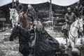
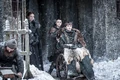
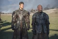
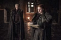
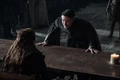

| EP | Imagem | Titulo | Prévia |
|---|---|---|---|
| 61 | "Dragonstone" | Jon organiza a defesa do Norte. Cersei busca aliados para, com isso, melhorar suas chances. Daenerys está de volta à casa. | |
| 62 |  | "Stormborn" | Daenerys recebe uma visita inesperada. Jon enfrenta uma rebelião, enquanto Tyrion planeja conquistar Westeros. |
| 63 | "The Queen's Justice" | Daenerys detém o controle da corte. Cersei retorna um presente, ao passo que Jaime aprende a partir de seus próprios erros. | |
| 64 |  | "The Spoils of War" | Os Lannisters pagam suas dívidas, enquanto Daenerys avalia as opções que tem. Arya volta para casa. |
| 65 |  | "Eastwatch" | Daenerys oferece uma escolha, ao passo que Arya fica desconfiada. Tyrion, por sua vez, responde a uma boa pergunta. |
| 66 |  | "Beyond the Wall" | Jon e os membros da Irmandade saem à caça dos mortos. Arya, por sua vez, confronta Sansa, e Tyrion pensa no futuro. |
| 67 |  | "The Dragon and the Wolf" | No último episódio da temporada, Tyrion tenta salvar Westeros de si mesmo, enquanto Sansa questiona certas lealdades. |